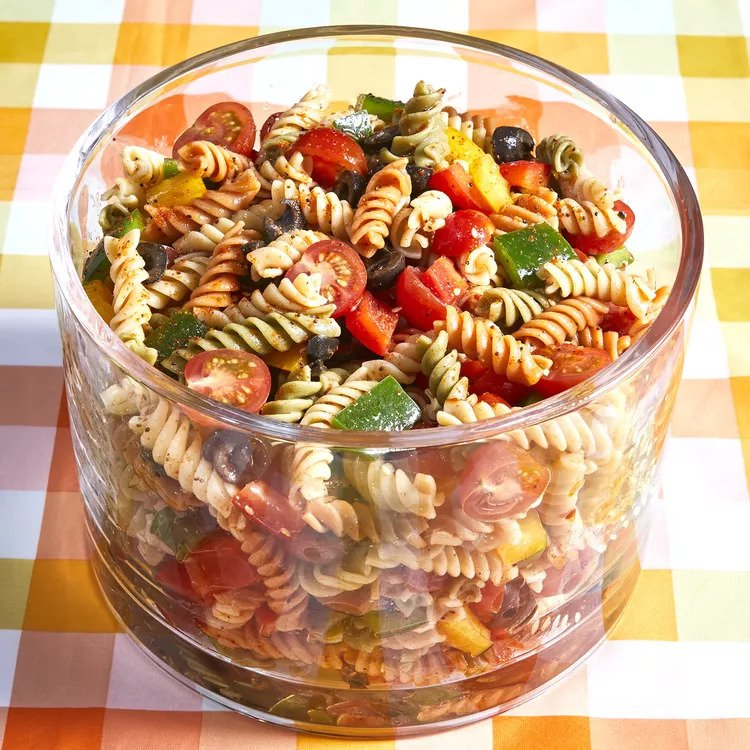

Pasta Salad Recipe

What is pasta salad?
Pasta salad is a salad dish prepared with one or
more types of pasta, almost always chilled, and
most often tossed in a vinegar, oil, or
mayonnaise-based dressing. It is typically
served as an appetizer, side dish or a main course.
Ingredients
- 1 pound tri-colored spiral pasta
- 1 (16 ounce) bottle Italian-style salad dressing
- 6 tablespoons salad seasoning mix
- 2 cups cherry tomatoes, diced
- 1 green bell pepper, chopped
- 1 red bell pepper, diced
- 1/2 yellow bell pepper, chopped
- 1 (2.25 ounce) can black olives, chopped
Directions
- Bring a large pot of lightly salted water to a boil.
- Cook pasta in the boiling water, stirring occasionally,
until tender yet firm to the bite, about 10 to 12 minutes;
rinse under cold water and drain.
- Whisk Italian dressing and salad spice mix together until
smooth.
- Combine pasta, tomatoes, bell peppers, and olives in a salad
bowl; pour dressing over salad and toss to coat.
- Refrigerate salad, 8 hours to overnight.